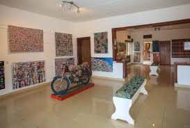
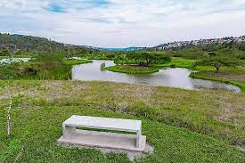
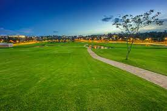

Kigali Genocide Memorial Located in Gisozi in the northwest corner of Kigali, the Memorial is easy to access by road from anywhere in the city
 Imena Arts Inema Arts Center is an arts center and art gallery located in Kigali, the capital city of Rwanda.
 Nyadungu Eco-Park Nyandungu Urban Wetland Ecotourism park is a 120 hectares of surface area, Rwandan tourism park located between Gasabo and Kicukiro Districts
 Kigali Golf Resort This design masterpiece is an 18 hole golf course located in the vibrant center of the capital city of Rwanda.